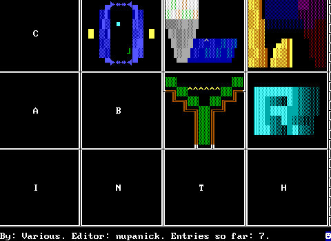
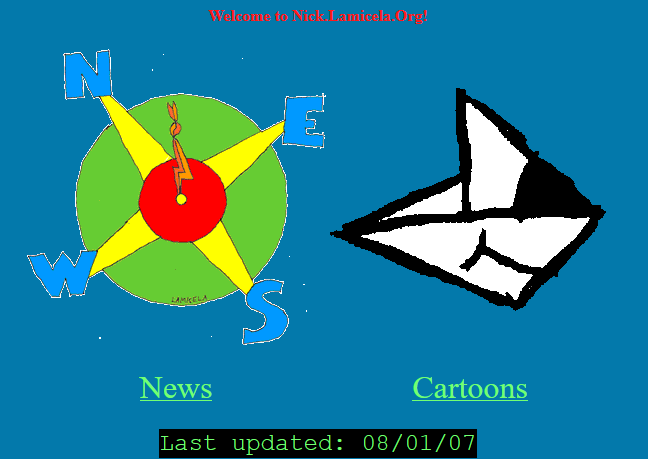

Nupa's Page
Braceless Javascript
2018. A couple of short programs written in a subset of javascript. Specifically, javascript but you can't use anything with curly braces in it, like 'if' or 'for'. Instead, ternaries and lambdas give you all the flow control you need. Has a lispy flavor.
Flistify
2018. A script to bulk-resize images for an f-list gallery, using windows batch and imagemagick.
Portal ZZT
2008. A portal clone in the ZZT Engine. Available at the Museum of ZZT.
ZZT Nanogames
2008. A collection of ZZT games that use only one screen each. Also includes Eight Legged Express, which I believe was made in one weekend as a challenge.
Collabyrinth
2008. A collaborative labyrinth ZZT game. I organized this on the z2 forums.
Credits:
- Alexis Janson
- Commodore
- Infosponge
- Jur
- Nupanick
- Oof, aka Superbowl Shuffle
- Quantum P
- RobertP
Traps and Zoids
2007. Some hand-drawn cartoons and very old web design. Good old HTML 4.0 Transitional.